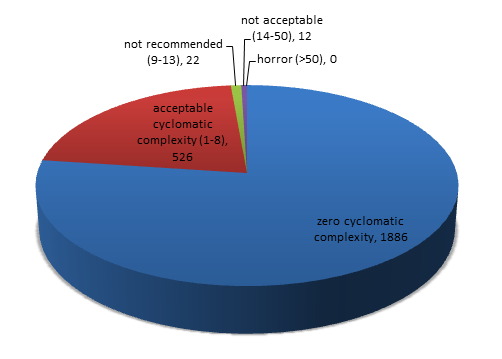

Highlights
Metrix++ is a tool to collect and analyse code metrics. Any metric is useless if it is not used.
Metrix++ offers ease of introduction and integration with a variety of application use cases.
- Monitoring trends (eg. on daily basis. In order to take actions or make right decisions earlier.)
- Enforcing trends (eg. on hourly basis, at every commit of code changes.)
- Automated asistance to review agains standards (eg. on per minute basis during code refactoring and code development.)
The workflow sections below demonstarate these basic application usecases.
Languages supported
The tool can parse C/C++, C# and Java source code files. The parser identifies certain regions in the code,
such as classes, functions, namespaces, interfaces, etc. It detects comments, strings and code for the preprocessor.
The identified regions form a tree of nested source code blocks, which are subsequently refered to and scanned by metrics plugins.
Thus the tool attributes metrics to regions, which provides fine grained data to analysis tools.
The following example demonstrates the regions concept.
| Source code |
Regions tree [type: name: content type] |
// simple C++ code
#include <myapi.h>
// I explain the following class
class MyClass {
public:
int m_var; // some member
// I explain the following function
MyClass(): m_var(0) {
char str[] = "unused string"
// nested region for good measure
struct MyStruct {};
}
// Do not judge ugly code below
#define get_max(a,b) ((a)>(b)?(a):(b))
set_max(int b) {
m_var = get_max(m_var, b);
}
};
// this is the last line
|
file: __global__: comment
file: __global__: code
file: __global__: preprocessor
file: __global__: code
class: MyClass: comment
class: MyClass: code
class: MyClass: code
class: MyClass: code, comment
class: MyClass: code
function: MyClass: comment
function: MyClass: code
function: MyClass: code, string
function: MyClass: code
struct: MyStruct: comment
struct: MyStruct: code
function: MyClass: code
class: MyClass: code
function: set_max: comment
function: set_max: preprocessor
function: set_max: code
function: set_max: code
function: set_max: code
class: MyClass: code
file: __global__: comment
|
Metrics
The metrics highlighed in blue are per file metrics. The other metrics are per region metrics.
| Metric (enable option) |
Brief description |
Motivation / Potential use |
| std.general.size |
Size of a file in bytes. |
- Monitoring the growth of source code base.
- Normalizing other metrics.
- Preventing large files and regions (large things are difficult to maintain).
- Predicting delivery dates by comparing
S-shaped code base growth / change curves.
|
| std.code.length.total |
The same as 'std.general.size' metric, but attributed to code regions. |
|
| std.code.lines.total |
Number of non-blank lines of code of any content type (exectuable, comments, etc.) |
|
| std.code.lines.code |
Number of non-blank lines of code excluding preprocessor and comments. |
|
| std.code.lines.preprocessor |
Number of non-blank lines of preprocessor code. |
- Enforcing localisation of preprocessor code in a single place.
- Encouraging usage of safer code structures instead of the preprocessor.
|
| std.code.lines.comments |
Number of non-blank lines of comments. |
- Low number of comments may indicate maintainability problems.
|
| std.code.complexity.cyclomatic |
McCabe cyclomatic complexity metric. |
- Identification of highly complex code for review and refactoring.
- Preventing complex functions (complexity is a reason of many defects and a reason of expensive maintaintenance).
|
| std.code.complexity.maxindent |
Maximum level of indentation of blocks within a region. For example, the following class has got
the metric equal to 1 and the function has got it equal to 2:
class WeekClass {
int isWeekend(int day) {
if (day == SATURDAY ||
day == SUNDAY) {
return true;
}
return false;
}
}
|
| std.code.magic.numbers |
Number of magic numbers. There is an option to exclude 0, -1 and 1 numbers from counting. |
Magic numbers are dangerous.
The
discussion on stackoverflow explains why. |
| std.code.todo.comments, std.code.todo.strings |
Number of TODO/FIXME/etc markers in comments and strings accordingly.
There is an option to configure a list of markers. |
Manage potentially incomplete work. If project manager dispatches issues only in a tracker tool,
todo markers are lost in the source code. The metric could make these 'lost' issues visible. |
| std.suppress |
An option enables collection of Metrix++ suppressions and 2 metrics: 'std.suppress:count' and
'std.suppress.file:count'. The first is number of suppressions per region.
The second is the same but applies for file-scope metrics. |
- Suppressing false-positives.
- Managing the amount of suppressions. There should be no false-positives to suppress with the right metric,
but there could be exceptions in specific cases. Managing suppressions is about managing exceptions.
If there are many exceptional cases, maybe something is wrong with a metric or the application of a metric.
|
| std.general.procerrors |
Number of errors detected by Metrix++ code parser. |
- Cleaning up errors to ensure reliable code scanning.
- Errors, like mismatched brackets, may result in bad identification of regions.
|
| std.general.proctime |
Seconds spent on processing a file. |
- Monitor and profile Metrix++ tool's performance.
|
In order to get the tool working, dowload the archive with the latest stable version
and unpack it to some folder. The first run of the tool will trigger the installation within the folder,
where it was launched.
In order to checkout the latest released version from the version control system use this command:
svn checkout svn://svn.code.sf.net/p/metrixplusplus/code/releases/latest Metrix++
In order to checkout the latest version under development, use this command:
svn checkout svn://svn.code.sf.net/p/metrixplusplus/code/mainline Metrix++
Prerequisites
Python Runtime Environment (version 2.7.* or later. Version 3.* has not been tested)
License
This program is free software; you can redistribute it and/or modify it
under the terms of the GNU General Public License as published by the
Free Software Foundation; version 3 of the License.
This program is distributed in the hope that it will be useful, but WITHOUT ANY WARRANTY;
without even the implied warranty of MERCHANTABILITY or FITNESS FOR A PARTICULAR PURPOSE.
See the GNU General Public License for more details.
You should have received a copy of the GNU General Public License along with the Metrix++;
if not, contact Project Administrator
The workflow and application usecases are demonstrated using source code from the
boost/interprocess library.
Boost versions 1.52 and 1.54 are used and refered below as the 'previous' version and the 'current' version accordingly.
Collect data
The first step is to collect the data.
The 'collect' tool has got multiple options to enable various metrics plugins.
Let's collect the number of lines of code and cyclomatic complexity metrics
for the previous (1.52.0 version) boost interprocess library. Assuming that 2 versions of boost library
are unpacked in the current working directory:
> cd boost_1_52_0
> python "/path/to/metrix++.py" collect --std.code.lines.code --std.code.complexity.cyclomatic -- boost/interprocess
> cd ../ # return back to working directory
The list of arguments after '--' enumerates the paths to read the source files.
As a result of execution of this command, a file metrixpp.db will be written in the current working directory.
It can be redefined using the --db-file option.
Metrix++ can compare code bases which reduces processing scope to the modified or new code.
So, let's collect the same data for the current (1.54.0 version) boost interprocess library.
> cd boost_1_54_0
> python "/path/to/metrix++.py" collect --std.code.lines.code --std.code.complexity.cyclomatic -- boost/interprocess --db-file-prev=../boost_1_52_0/metrixpp.db
> cd ../ # return back to working directory
The option --db-file-prev points to the file with the data collected in the previous step.
So, eventually it executed iterative collection. It can speed up the exectuion significantly,
depending on amount of changes between two version.
Check other options of the collect tool by executing:
> python "/path/to/metrix++.py" collect --help
Summary metrics and distribution tables/graphs
It is time to look at the data files collected (step above). The command:
> python "/path/to/metrix++.py" view --db-file=boost_1_54_0/metrixpp.db
prints summary metrics, like minimum/maximum, and distribution/frequency tables:
:: info: Overall metrics for 'std.code.complexity:cyclomatic' metric
Average : 0.652902698283
Minimum : 0
Maximum : 37
Total : 1597.0
Distribution : 2446 regions in total (including 0 suppressed)
Metric value : Ratio : R-sum : Number of regions
0 : 0.771 : 0.771 : 1886 |||||||||||||||||||||||||||||||||||||||||||||||||||||||||||||||||||||||||||||
1 : 0.110 : 0.881 : 268 |||||||||||
2 : 0.044 : 0.925 : 108 ||||
3 : 0.025 : 0.949 : 60 ||
4 : 0.016 : 0.966 : 40 ||
5 : 0.007 : 0.973 : 18 |
6 : 0.006 : 0.979 : 14 |
7 : 0.004 : 0.983 : 10
8 : 0.003 : 0.986 : 8
9 : 0.002 : 0.988 : 4
10 : 0.004 : 0.991 : 9
11 : 0.002 : 0.993 : 4
12 : 0.001 : 0.994 : 3
13 : 0.001 : 0.995 : 2
14 : 0.001 : 0.996 : 2
15-16 : 0.001 : 0.997 : 3
17-18 : 0.001 : 0.998 : 3
20 : 0.000 : 0.999 : 1
23-25 : 0.001 : 1.000 : 2
37 : 0.000 : 1.000 : 1
:: info: Overall metrics for 'std.code.lines:code' metric
Average : 6.64356984479
Minimum : 0
Maximum : 201
Total : 23970.0
Distribution : 3608 regions in total (including 0 suppressed)
Metric value : Ratio : R-sum : Number of regions
0-1 : 0.088 : 0.088 : 319 |||||||||
2 : 0.320 : 0.409 : 1155 ||||||||||||||||||||||||||||||||
3 : 0.108 : 0.517 : 390 |||||||||||
4 : 0.081 : 0.598 : 294 ||||||||
5 : 0.080 : 0.678 : 290 ||||||||
6 : 0.061 : 0.739 : 220 ||||||
7 : 0.049 : 0.788 : 176 |||||
8 : 0.030 : 0.818 : 109 |||
9 : 0.025 : 0.843 : 89 ||
10-11 : 0.032 : 0.876 : 117 |||
12-13 : 0.020 : 0.895 : 71 ||
14 : 0.012 : 0.907 : 43 |
15-16 : 0.017 : 0.924 : 61 ||
17-19 : 0.015 : 0.939 : 55 ||
20-22 : 0.013 : 0.952 : 46 |
23-26 : 0.011 : 0.963 : 40 |
27-30 : 0.009 : 0.972 : 33 |
31-39 : 0.009 : 0.981 : 33 |
40-65 : 0.009 : 0.991 : 34 |
66-201 : 0.009 : 1.000 : 33 |
:: info: Directory content:
Directory : .
The same command with --db-file-prev option enables comparision and change trends are shown in [] brackets:
> python "/path/to/metrix++.py" view --db-file=boost_1_54_0/metrixpp.db --db-file-prev=boost_1_52_0/metrixpp.db
:: info: Overall metrics for 'std.code.complexity:cyclomatic' metric
Average : 0.652902698283 [+0.00362138411453]
Minimum : 0 [+0]
Maximum : 37 [+1]
Total : 1597.0 [+16.0]
Distribution : 2446 [+11] regions in total (including 0 [+0] suppressed)
Metric value : Ratio : R-sum : Number of regions
0 : 0.771 : 0.771 : 1886 [+5 ] |||||||||||||||||||||||||||||||||||||||||||||||||||||||||||||||||||||||||||||
1 : 0.110 : 0.881 : 268 [+4 ] |||||||||||
2 : 0.044 : 0.925 : 108 [+0 ] ||||
3 : 0.025 : 0.949 : 60 [+2 ] ||
4 : 0.016 : 0.966 : 40 [-1 ] ||
5 : 0.007 : 0.973 : 18 [-1 ] |
6 : 0.006 : 0.979 : 14 [+1 ] |
7 : 0.004 : 0.983 : 10 [+1 ]
8 : 0.003 : 0.986 : 8 [+1 ]
9 : 0.002 : 0.988 : 4 [+0 ]
10 : 0.004 : 0.991 : 9 [-2 ]
11 : 0.002 : 0.993 : 4 [+1 ]
12 : 0.001 : 0.994 : 3 [+0 ]
13 : 0.001 : 0.995 : 2 [+0 ]
14 : 0.001 : 0.996 : 2 [+0 ]
15-16 : 0.001 : 0.997 : 3 [-1 ]
17-18 : 0.001 : 0.998 : 3 [+1 ]
20 : 0.000 : 0.999 : 1 [+0 ]
23-25 : 0.001 : 1.000 : 2 [+0 ]
36-37 : 0.000 : 1.000 : 1 [+0 ]
:: info: Overall metrics for 'std.code.lines:code' metric
Average : 6.64356984479 [+0.012181964309]
Minimum : 0 [+0]
Maximum : 201 [+4]
Total : 23970.0 [+223.0]
Distribution : 3608 [+27] regions in total (including 0 [+0] suppressed)
Metric value : Ratio : R-sum : Number of regions
0-1 : 0.088 : 0.088 : 319 [+3 ] |||||||||
2 : 0.320 : 0.409 : 1155 [+9 ] ||||||||||||||||||||||||||||||||
3 : 0.108 : 0.517 : 390 [-3 ] |||||||||||
4 : 0.081 : 0.598 : 294 [+7 ] ||||||||
5 : 0.080 : 0.678 : 290 [+7 ] ||||||||
6 : 0.061 : 0.739 : 220 [-1 ] ||||||
7 : 0.049 : 0.788 : 176 [-2 ] |||||
8 : 0.030 : 0.818 : 109 [-1 ] |||
9 : 0.025 : 0.843 : 89 [+4 ] ||
10-11 : 0.032 : 0.876 : 117 [+9 ] |||
12-13 : 0.020 : 0.895 : 71 [-9 ] ||
14 : 0.012 : 0.907 : 43 [+0 ] |
15-16 : 0.017 : 0.924 : 61 [+0 ] ||
17-19 : 0.015 : 0.939 : 55 [+6 ] ||
20-22 : 0.013 : 0.952 : 46 [-3 ] |
23-26 : 0.011 : 0.963 : 40 [+2 ] |
27-30 : 0.009 : 0.972 : 33 [-3 ] |
31-39 : 0.009 : 0.981 : 33 [+0 ] |
40-65 : 0.009 : 0.991 : 34 [+1 ] |
66-201 : 0.009 : 1.000 : 33 [+1 ] |
:: info: Directory content:
Directory : .
Reducing analysis scope
There are two ways to reduce the analysis scope for the view tool. The first is to enumerate paths of interest.
For example, the following command reduces scope to the 'allocators' sub-directory within the processed code.
> python "/path/to/metrix++.py" view --db-file=boost_1_54_0/metrixpp.db -- ./boost/interprocess/allocators
The second is to specify the --scope-mode option, which instructs the tool to process only modified and/or new files/regions.
For example, to view the summary metrics for all modified and new regions:
> python "/path/to/metrix++.py" view --db-file=boost_1_54_0/metrixpp.db --db-file-prev=boost_1_52_0/metrixpp.db --scope-mode=touched
:: info: Overall metrics for 'std.code.complexity:cyclomatic' metric
Average : 1.84924623116 [-0.0230941943761]
Minimum : 0 [+0]
Maximum : 37 [+1]
Total : 368.0 [+16.0]
Distribution : 199 [+11] regions in total (including 0 [+0] suppressed)
Metric value : Ratio : R-sum : Number of regions
0 : 0.608 : 0.608 : 121 [+5 ] |||||||||||||||||||||||||||||||||||||||||||||||||||||||||||||
1 : 0.131 : 0.739 : 26 [+4 ] |||||||||||||
2 : 0.070 : 0.809 : 14 [+0 ] |||||||
3 : 0.060 : 0.869 : 12 [+2 ] ||||||
4 : 0.015 : 0.884 : 3 [-1 ] ||
5 : 0.015 : 0.899 : 3 [-1 ] ||
6 : 0.005 : 0.905 : 1 [+1 ] |
7 : 0.015 : 0.920 : 3 [+1 ] ||
8 : 0.015 : 0.935 : 3 [+1 ] ||
9 : 0.010 : 0.945 : 2 [+0 ] |
10 : 0.010 : 0.955 : 2 [-2 ] |
11 : 0.005 : 0.960 : 1 [+1 ] |
12 : 0.005 : 0.965 : 1 [+0 ] |
13 : 0.005 : 0.970 : 1 [+0 ] |
16 : 0.005 : 0.975 : 1 [-1 ] |
17 : 0.005 : 0.980 : 1 [+0 ] |
18 : 0.010 : 0.990 : 2 [+1 ] |
20 : 0.005 : 0.995 : 1 [+0 ] |
36-37 : 0.005 : 1.000 : 1 [+0 ] |
:: info: Overall metrics for 'std.code.lines:code' metric
Average : 15.9645390071 [-0.815853149771]
Minimum : 0 [+0]
Maximum : 201 [+6]
Total : 4502.0 [+223.0]
Distribution : 282 [+27] regions in total (including 0 [+0] suppressed)
Metric value : Ratio : R-sum : Number of regions
0-1 : 0.053 : 0.053 : 15 [+3 ] |||||
2 : 0.124 : 0.177 : 35 [+9 ] ||||||||||||
3 : 0.053 : 0.230 : 15 [-3 ] |||||
4 : 0.060 : 0.291 : 17 [+7 ] ||||||
5 : 0.089 : 0.379 : 25 [+7 ] |||||||||
6 : 0.060 : 0.440 : 17 [-1 ] ||||||
7 : 0.050 : 0.489 : 14 [-2 ] |||||
8-9 : 0.074 : 0.564 : 21 [+3 ] |||||||
10 : 0.035 : 0.599 : 10 [+5 ] ||||
11 : 0.082 : 0.681 : 23 [+4 ] ||||||||
12-13 : 0.043 : 0.723 : 12 [-9 ] ||||
14-15 : 0.039 : 0.762 : 11 [-1 ] ||||
16-18 : 0.028 : 0.791 : 8 [+4 ] |||
19-22 : 0.039 : 0.830 : 11 [+0 ] ||||
23-26 : 0.039 : 0.869 : 11 [+2 ] ||||
27-32 : 0.028 : 0.897 : 8 [-3 ] |||
38-50 : 0.025 : 0.922 : 7 [+0 ] ||
51-69 : 0.025 : 0.947 : 7 [+1 ] ||
71-100 : 0.032 : 0.979 : 9 [+2 ] |||
101-201 : 0.021 : 1.000 : 6 [-1 ] ||
:: info: Directory content:
Directory : .
Detailed metrics per file/region
The same view tool can print detailed metrics per file and per every region in the specified file.
In order to get detailed metrics, enumerate files of interest after '--'. For example:
> python "/path/to/metrix++.py" view --db-file=boost_1_54_0/metrixpp.db --db-file-prev=boost_1_52_0/metrixpp.db -- ./boost/interprocess/detail/managed_open_or_create_impl.hpp
produces output similar to this (truncated to make the page shorter):
./interprocess/detail/managed_open_or_create_impl.hpp:302: info: Metrics per 'priv_open_or_create' region
Region name : priv_open_or_create
Region type : function
Offsets : 8314-14526
Line numbers : 301-467
Modified : True
std.code.complexity:cyclomatic: 37 [+1]
std.code.lines:code: 148 [+4]
More about the viewer
The 'view' command has got an option to alter the output format. It is possible to get the same data
in xml or python dictionary formats. This can be particularly useful for integration of the tool with
other applications. For example, an editor may re-collect and show context based metrics when a file is saved.
> python "/path/to/metrix++.py" view --db-file=boost_1_54_0/metrixpp.db --format=xml
Check other options of the view tool by executing:
> python "/path/to/metrix++.py" view --help
Apply thresholds
The viewer shows (above) that there are functions with quite large cyclomatic complexities.
Growth of this metric can be considered as negative trend. The Metrix++ 'limit' tool offers the capability
to manage control over trends by applying limits to metric values.
Exceeded limits could be raised as alarms by quality management and control.
Hotspots
The hotspots mode of the limit tool helps to identify top files/regions exceeding a metric threshold.
Let's identify the top 3 functions in the boost interprocess library, which exceed a limit of 15 points of
cyclomatic complexity:
> python "/path/to/metrix++.py" limit --db-file=boost_1_54_0/metrixpp.db --max-limit=std.code.complexity:cyclomatic:15 --hotspots=3
./interprocess/detail/managed_open_or_create_impl.hpp:302: warning: Metric 'std.code.complexity:cyclomatic' for region 'priv_open_or_create' exceeds the limit.
Metric name : std.code.complexity:cyclomatic
Region name : priv_open_or_create
Metric value : 37
Modified : None
Change trend : None
Limit : 15.0
Suppressed : False
./interprocess/streams/vectorstream.hpp:284: warning: Metric 'std.code.complexity:cyclomatic' for region 'seekoff' exceeds the limit.
Metric name : std.code.complexity:cyclomatic
Region name : seekoff
Metric value : 25
Modified : None
Change trend : None
Limit : 15.0
Suppressed : False
./interprocess/streams/bufferstream.hpp:174: warning: Metric 'std.code.complexity:cyclomatic' for region 'seekoff' exceeds the limit.
Metric name : std.code.complexity:cyclomatic
Region name : seekoff
Metric value : 23
Modified : None
Change trend : None
Limit : 15.0
Suppressed : False
Controlling trends
The exit code of the 'limit' tool is equal to the number of warnings printed. This supports use of the tool
as a static analysis tool during the software build process. In this case, a non-zero exit code means
that there are violations to the agreed standards and it may fail the build. The same command
without --hotspots option will print all regions/files exceeding the specified limit:
> python "/path/to/metrix++.py" limit --db-file=boost_1_54_0/metrixpp.db --max-limit=std.code.complexity:cyclomatic:15
Modes to exclude old code from the considiration
However, it is likely there are many warnings printed in this mode, especially if very old or legacy code is profiled
against new metrics and coding rules. Although all warnings can be removed
by re-factoring as a big task force activity, it is where many tools are rejected,
because it is difficult to justify the initial cost of applying and integrating them.
The Metrix++ 'limit' tool has got an option --warn-mode, which helps to overcome this problem.
--warn-mode=touched encourages re-factoring only for new and modified regions. It enables
continuous refactoring. It does not matter how late the rule is applied or the
coding standard is modified. It is possible to do it anytime with zero initial investment.
For example, applying it to the boost interprocess library for a changes between 1.52 and 1.54 versions
results in only 6 warnings:
> python "/path/to/metrix++.py" limit --db-file=boost_1_54_0/metrixpp.db --db-file-prev=boost_1_52_0/metrixpp.db --max-limit=std.code.complexity:cyclomatic:15 --warn-mode=touched
./interprocess/detail/managed_open_or_create_impl.hpp:302: warning: Metric 'std.code.complexity:cyclomatic' for region 'priv_open_or_create' exceeds the limit.
Metric name : std.code.complexity:cyclomatic
Region name : priv_open_or_create
Metric value : 37
Modified : True
Change trend : +1
Limit : 15.0
Suppressed : False
./interprocess/ipc/message_queue.hpp:375: warning: Metric 'std.code.complexity:cyclomatic' for region 'insert_at' exceeds the limit.
Metric name : std.code.complexity:cyclomatic
Region name : insert_at
Metric value : 16
Modified : True
Change trend : 0
Limit : 15.0
Suppressed : False
./interprocess/mapped_region.hpp:575: warning: Metric 'std.code.complexity:cyclomatic' for region 'mapped_region' exceeds the limit.
Metric name : std.code.complexity:cyclomatic
Region name : mapped_region
Metric value : 18
Modified : True
Change trend : +2
Limit : 15.0
Suppressed : False
./interprocess/mem_algo/detail/mem_algo_common.hpp:452: warning: Metric 'std.code.complexity:cyclomatic' for region 'priv_allocate_many' exceeds the limit.
Metric name : std.code.complexity:cyclomatic
Region name : priv_allocate_many
Metric value : 20
Modified : True
Change trend : 0
Limit : 15.0
Suppressed : False
./interprocess/mem_algo/rbtree_best_fit.hpp:787: warning: Metric 'std.code.complexity:cyclomatic' for region 'priv_expand_both_sides' exceeds the limit.
Metric name : std.code.complexity:cyclomatic
Region name : priv_expand_both_sides
Metric value : 17
Modified : True
Change trend : 0
Limit : 15.0
Suppressed : False
./interprocess/sync/windows/named_sync.hpp:98: warning: Metric 'std.code.complexity:cyclomatic' for region 'open_or_create' exceeds the limit.
Metric name : std.code.complexity:cyclomatic
Region name : open_or_create
Metric value : 18
Modified : True
Change trend : 0
Limit : 15.0
Suppressed : False
If it is challenging or of little benefit to refactor everything touched,
--warn-mode=trends simplifies the control over modified regions and only makes sure
that there are no regressions in modified code. In other words, a warning is printed about a modified region/file
only if a metric exceeds the specified limit and the value of the metric has got a negative trend due to the modification.
It is possible to apply it anytime with zero initial investment and almost zero on-going investment around old code.
For example, applying it to the boost interprocess library for a changes between 1.52 and 1.54 versions
results in only 2 warnings:
> python "/path/to/metrix++.py" limit --db-file=boost_1_54_0/metrixpp.db --db-file-prev=boost_1_52_0/metrixpp.db --max-limit=std.code.complexity:cyclomatic:15 --warn-mode=trend
./interprocess/detail/managed_open_or_create_impl.hpp:302: warning: Metric 'std.code.complexity:cyclomatic' for region 'priv_open_or_create' exceeds the limit.
Metric name : std.code.complexity:cyclomatic
Region name : priv_open_or_create
Metric value : 37
Modified : True
Change trend : +1
Limit : 15.0
Suppressed : False
./interprocess/mapped_region.hpp:575: warning: Metric 'std.code.complexity:cyclomatic' for region 'mapped_region' exceeds the limit.
Metric name : std.code.complexity:cyclomatic
Region name : mapped_region
Metric value : 18
Modified : True
Change trend : +2
Limit : 15.0
Suppressed : False
--warn-mode=new ignores existing code and ensures that warnings are only about new code.
For example, applying it to the boost interprocess library for a changes between 1.52 and 1.54 versions
results in 0 warnings, so it shows that the new code is totally compliant with the standard required in the example.
> python "/path/to/metrix++.py" limit --db-file=boost_1_54_0/metrixpp.db --db-file-prev=boost_1_52_0/metrixpp.db --max-limit=std.code.complexity:cyclomatic:15 --warn-mode=new
Suppressions
It is possible to suppress warnings. Suppressions are collected from comments in code
and used by the 'limit' tool to filter out suppressed warnings.
It supports fine grained control over false-positive warnings, if there are any.
In order to suppress a warning:
- per region metrics: put the metrix++ instruction in the comments before the region, for example:
// This function returns string typed
// representation of a name of a color,
// requested by color's id
// metrix++: suppress std.code.complexity:cyclomatic
std::string getColorName(int color_id)
{
switch (color_id)
{
case COLOR_RED:
return std::string("red")
case COLOR_GREEN:
return std::string("green")
case COLOR_BLUE:
return std::string("blue")
/* and so on */
}
}
per file metrics: put the metrix++ instruction in the comments at the beginning of a file, for example:
//
// This file does processing of colors and brushes
// Copyright is my company, 2013
//
// However, it is too long and big file, and there is no time
// to split it into multiple file, so shut up the metrix++ warnings:
// metrix++: suppress std.general:size
//
std::string getColorName(int color_id)
{
...
...
activate collection of suppressions:
> python "/path/to/metrix++.py" collect --std.suppress
run the 'limit' tool WITHOUT --disable-suppressions option:
> python "/path/to/metrix++.py" limit ...
Important notice:
- The --std.suppress option enables collection of 2 metrics as well: 'std.suppress:count' and
'std.suppress.file:count'. The first is number of suppressions per region.
The second is the same but applies to file-scope metrics.
It supports management of the number of suppressions.
Usually there are no false-positives to suppress with the right metric,
but there could be exceptions in specific cases. Managing suppressions is about managing exceptions.
If there are many exceptional cases, maybe something is wrong with a metric or the application of a metric.
Two code examples about colors above do not demonstrate the technically exceptional case,
they likely demonstrate a case of a process exception, like "there is no time to do it properly now", or
a case of the wrong application of a metric, like "shut up the useless tool". So, be careful.
The 'view' tool shows the number of suppressions and its change trends on a per metric basis.
Other applications
Checking data file properties
The Metrix++ 'info' tool is helpful to check the properties of a data file, like the settings used to write it,
collected metrics and files processed. For example:
> python "/path/to/metrix++.py" info --db-file=boost_1_54_0/metrixpp.db
boost_1_54_0/metrixpp.db:: info: Created using plugins and settings:
version : 1.0
std.code.complexity:version: 1.1
std.code.cpp:version: 1.1
std.code.cpp:files: *.c,*.cc,*.cpp,*.cxx,*.h,*.hh,*.hpp,*.hxx
std.code.cs:version: 1.0
std.code.cs:files: *.cs
std.code.java:version: 1.1
std.code.java:files: *.java
std.code.lines:version: 1.1
test_workflow.db:: info: Collected metrics:
std.code.complexity:cyclomatic:
std.code.lines:code:
:: info: Processed files and checksums:
./interprocess/allocators/detail/node_pool.hpp: 0xb099a7c3
./interprocess/allocators/detail/node_tools.hpp: 0xaaf5044d
./interprocess/anonymous_shared_memory.hpp: 0x2bf06cb0
./interprocess/containers/allocation_type.hpp: 0x8e95cda0
./interprocess/containers/containers_fwd.hpp: 0xa4d0d9f7
./interprocess/containers/deque.hpp: 0x6dbb77af
./interprocess/containers/flat_map.hpp: 0x6750338c
...
Exporting results
The Metrix++ 'export' tool exports data files to csv formated files. For example:
> python "/path/to/metrix++.py" export --db-file=boost_1_54_0/metrixpp.db > boost_1_54_0/metrixpp.csv
file,region,type,modified,line start,line end,std.code.complexity:cyclomatic,std.code.lines:code
./interprocess/allocators/detail/node_pool.hpp,__global__,global,,1,110,,0
./interprocess/allocators/detail/node_pool.hpp,boost,namespace,,33,105,,2
./interprocess/allocators/detail/node_pool.hpp,interprocess,namespace,,34,104,,2
./interprocess/allocators/detail/node_pool.hpp,ipcdetail,namespace,,35,103,,4
./interprocess/allocators/detail/node_pool.hpp,SegmentManager,class,,39,72,,16
...
Files with csv format can be opened by applications, like Microsoft Office Excel, with advanced analysis capabilities.
For example, to draw this distribution graph:

It is not recommended to use the export tool to implement custom post-analysis Metrix++ extensions.
The main reason is that granted backward compatibility support for csv columns is not granted.
Another main reason is that
exporting is relatively slow process. It is recommended to use Metrix++ extensions API instead.
Metric plugin
The tutorial will explain how to create a plugin to count magic numbers in source code.
It will be relatively simple at first and will be extended with additional configuration
options and smarter counting logic.
Create placeholder for new plugin
- All plugins are loaded by Metrix++ from standard places within the tool installation directory and
from custom places specified in the METRIXPLUSPLUS_PATH environment variable.
METRIXPLUSPLUS_PATH has got the same format as system PATH environment variable.
So, the first step in plugin development is to set the METRIXPLUSPLUS_PATH to point out to
the directory (or directories) where plugin is located.
- Create new python package 'myext', python lib 'magic.py' and 'magic.ini' file.
+ working_directory (set in METRIXPLUSPLUS_PATH variable)
\--+ myext
\--- __init__.py
\--- magic.py
\--- magic.ini
- __init__.py is empty file to make myext considered by python as a package.
- Edit magic.py to have the following content:
import mpp.api
class Plugin(mpp.api.Plugin):
def initialize(self):
print "Hello world"
mpp.api package include Metrix++ API classes. mpp.api.Plugin is the base class, which can be loaded
by Metrix++ engine and does nothing by default. In the code sample above it is extended to print
"Hello world" on initialization.
- Edit magic.ini to have the following content:
[Plugin]
version: 1.0
package: myext
module: magic
class: Plugin
depends: None
actions: collect
enabled: True
This file is a manifest for Metrix++ plugin loader. The fields in Plugin section are:
- version
- a string representing the version, step up it every time when behaviour of a plugin
or backward compatibility in api or data scope is changed
- package
- python package name where to load from
- module
- python module name (filename of *.py file) to load
- class
- name of a plugin class to instanciate
- depends
- list of plugin names to load, if it this plugin is loaded
- actions
- list of Metrix++ actions affected by this plugin
- enabled
- True or False, working status of a plugin
- Now run Metrix++ to see how this new plugin works:
> python "/path/to/metrix++.py" collect
Hello world
Toogle option for the plugin
- It is recommended to follow the convention for all plugins: 'run only if enabled'.
So, let's extend the magic.py file to make it configurable
import mpp.api
class Plugin(mpp.api.Plugin,
# make this instance configurable...
mpp.api.IConfigurable):
# ... and implement 2 interfaces
def declare_configuration(self, parser):
parser.add_option("--myext.magic.numbers", "--mmn",
action="store_true", default=False,
help="Enables collection of magic numbers metric [default: %default]")
def configure(self, options):
self.is_active_numbers = options.__dict__['myext.magic.numbers']
def initialize(self):
# use configuration option here
if self.is_active_numbers == True:
print "Hello world"
parser argument is an instance of optparse.OptionParser class. It has got an extension to
accept multiple options of the same argument. Check std.tools.limit to see how to declare multiopt options, if you need.
- Now run Metrix++ to see how this works:
> python "/path/to/metrix++.py" collect --myext.magic.numbers
Hello world
Subscribe to notifications from parent plugins (or code parsers)
- Every plugin works in a callback functions called by parent plugins.
Callback receives a reference to parent plugin, data object where to store metrics data,
and a flag indicating if there are changes in file or parent's settings since the previous collection.
import mpp.api
class Plugin(mpp.api.Plugin,
mpp.api.IConfigurable,
# declare that it can subscribe on notifications
mpp.api.Child):
def declare_configuration(self, parser):
parser.add_option("--myext.magic.numbers", "--mmn",
action="store_true", default=False,
help="Enables collection of magic numbers metric [default: %default]")
def configure(self, options):
self.is_active_numbers = options.__dict__['myext.magic.numbers']
def initialize(self):
if self.is_active_numbers == True:
# subscribe to notifications from all code parsers
self.subscribe_by_parents_interface(mpp.api.ICode, 'callback')
# parents (code parsers) will call the callback declared
def callback(self, parent, data, is_updated):
print parent.get_name(), data.get_path(), is_updated
- Now run Metrix++ to see how this works. Try to do iterative scans (--db-file-prev option) to see how the
state of arguments is changed
> python "/path/to/metrix++.py" collect --myext.magic.numbers
std.code.cpp ./test.cpp True
Implement simple metric based on regular expression pattern
- Callback may execute counting, searcing and additional parsing and store results, using data argument.
'data' argument is an instance of mpp.api.FileData class.
However, most metrics can be implemented
simplier, if mpp.api.MetricPluginMixin routines are used. MetricPluginMixin implements
declarative style for metrics based on searches by regular expression. It
cares about initialisation of database fields and properties.
It implements default callback which counts number of matches by regular expression for all
active declared metrics. So, let's utilise that:
import mpp.api
import re
class Plugin(mpp.api.Plugin,
mpp.api.IConfigurable,
mpp.api.Child,
# reuse by inheriting standard metric facilities
mpp.api.MetricPluginMixin):
def declare_configuration(self, parser):
parser.add_option("--myext.magic.numbers", "--mmn",
action="store_true", default=False,
help="Enables collection of magic numbers metric [default: %default]")
def configure(self, options):
self.is_active_numbers = options.__dict__['myext.magic.numbers']
def initialize(self):
# declare metric rules
self.declare_metric(
self.is_active_numbers, # to count if active in callback
self.Field('numbers', int), # field name and type in the database
re.compile(r'''\b[0-9]+\b'''), # pattern to search
marker_type_mask=mpp.api.Marker.T.CODE, # search in code
region_type_mask=mpp.api.Region.T.ANY) # search in all types of regions
# use superclass facilities to initialize everything from declared fields
super(Plugin, self).initialize(fields=self.get_fields())
# subscribe to all code parsers if at least one metric is active
if self.is_active() == True:
self.subscribe_by_parents_interface(mpp.api.ICode)
- Now run Metrix++ to count numbers in code files.
> python "/path/to/metrix++.py" collect --myext.magic.numbers
- Now view the results. At this stage it is fully working simple metric.
> python "/path/to/metrix++.py" view
:: info: Overall metrics for 'myext.magic:numbers' metric
Average : 2.75
Minimum : 0
Maximum : 7
Total : 11.0
Distribution : 4 regions in total (including 0 suppressed)
Metric value : Ratio : R-sum : Number of regions
0 : 0.250 : 0.250 : 1 |||||||||||||||||||||||||
1 : 0.250 : 0.500 : 1 |||||||||||||||||||||||||
3 : 0.250 : 0.750 : 1 |||||||||||||||||||||||||
7 : 0.250 : 1.000 : 1 |||||||||||||||||||||||||
:: info: Directory content:
Directory : .
Extend regular expression incremental counting by smarter logic
- At this stage the metric counts every number in source code.
However, we indent to spot only 'magic' numbers. Declared constant
is not a magic number, so it is better to exclude constants from counting.
It is easy to change default counter behaviour by implementing
a function with name '_<metric_name>_count'.
import mpp.api
import re
class Plugin(mpp.api.Plugin,
mpp.api.IConfigurable,
mpp.api.Child,
mpp.api.MetricPluginMixin):
def declare_configuration(self, parser):
parser.add_option("--myext.magic.numbers", "--mmn",
action="store_true", default=False,
help="Enables collection of magic numbers metric [default: %default]")
def configure(self, options):
self.is_active_numbers = options.__dict__['myext.magic.numbers']
def initialize(self):
# improve pattern to find declarations of constants
pattern_to_search = re.compile(
r'''((const\s+([_a-zA-Z][_a-zA-Z0-9]*\s+)+[=]\s*)[-+]?[0-9]+\b)|(\b[0-9]+\b)''')
self.declare_metric(self.is_active_numbers,
self.Field('numbers', int),
# give a pair of pattern + custom counter logic class
(pattern_to_search, self.NumbersCounter),
marker_type_mask=mpp.api.Marker.T.CODE,
region_type_mask=mpp.api.Region.T.ANY)
super(Plugin, self).initialize(fields=self.get_fields())
if self.is_active() == True:
self.subscribe_by_parents_interface(mpp.api.ICode)
# implement custom counter behavior:
# increments counter by 1 only if single number spotted,
# but not declaration of a constant
class NumbersCounter(mpp.api.MetricPluginMixin.IterIncrementCounter):
def increment(self, match):
if match.group(0).startswith('const'):
return 0
return 1
- Initialy counter is initialized by zero, but it is possible to
change it as well by implementing a function with name '_<metric_name>_count_initialize'.
Plugin we are implementing does not require this.
- Now run Metrix++ to collect and view the results.
> python "/path/to/metrix++.py" collect --myext.magic.numbers
> python "/path/to/metrix++.py" view
Language specific regular expressions
- In the previous step we added matching of constants assuming that identifiers
may have symbols '_', 'a-z', 'A-Z' and '0-9'. It is true for C++ but it is not complete for Java.
Java identifier may have '$' symbol in the identifier. So, let's add language specific pattern
in the declaration of the metric:
import mpp.api
import re
class Plugin(mpp.api.Plugin,
mpp.api.IConfigurable,
mpp.api.Child,
mpp.api.MetricPluginMixin):
def declare_configuration(self, parser):
parser.add_option("--myext.magic.numbers", "--mmn",
action="store_true", default=False,
help="Enables collection of magic numbers metric [default: %default]")
def configure(self, options):
self.is_active_numbers = options.__dict__['myext.magic.numbers']
def initialize(self):
# specialized pattern for java
pattern_to_search_java = re.compile(
r'''((const\s+([_$a-zA-Z][_$a-zA-Z0-9]*\s+)+[=]\s*)[-+]?[0-9]+\b)|(\b[0-9]+\b)''')
# pattern for C++ and C# languages
pattern_to_search_cpp_cs = re.compile(
r'''((const\s+([_a-zA-Z][_a-zA-Z0-9]*\s+)+[=]\s*)[-+]?[0-9]+\b)|(\b[0-9]+\b)''')
# pattern for all other languages
pattern_to_search = re.compile(
r'''\b[0-9]+\b''')
self.declare_metric(self.is_active_numbers,
self.Field('numbers', int),
# dictionary of pairs instead of a single pair
{
'std.code.java': (pattern_to_search_java, self.NumbersCounter),
'std.code.cpp': (pattern_to_search_cpp_cs, self.NumbersCounter),
'std.code.cs': (pattern_to_search_cpp_cs, self.NumbersCounter),
'*': pattern_to_search
},
marker_type_mask=mpp.api.Marker.T.CODE,
region_type_mask=mpp.api.Region.T.ANY)
super(Plugin, self).initialize(fields=self.get_fields())
if self.is_active() == True:
self.subscribe_by_parents_interface(mpp.api.ICode)
class NumbersCounter(mpp.api.MetricPluginMixin.IterIncrementCounter):
def increment(self, match):
if match.group(0).startswith('const'):
return 0
return 1
- Keys in the dictionary of patterns are names of parent plugins (references to code parsers).
The key '*' refers to any parser.
- Now run Metrix++ to collect and view the results.
> python "/path/to/metrix++.py" collect --myext.magic.numbers
> python "/path/to/metrix++.py" view
Store only non-zero metric values
- Most functions have the metric, which we are implemneting, equal to zero.
However, we are interested in finding code blocks having this metric greater than zero.
Zeros consumes the space in the data file. So, we can optimise the size of a data file,
if we exclude zero metric values. Let's declare this behavior for the metric.
import mpp.api
import re
class Plugin(mpp.api.Plugin,
mpp.api.IConfigurable,
mpp.api.Child,
mpp.api.MetricPluginMixin):
def declare_configuration(self, parser):
parser.add_option("--myext.magic.numbers", "--mmn",
action="store_true", default=False,
help="Enables collection of magic numbers metric [default: %default]")
def configure(self, options):
self.is_active_numbers = options.__dict__['myext.magic.numbers']
def initialize(self):
pattern_to_search_java = re.compile(
r'''((const\s+([_$a-zA-Z][_$a-zA-Z0-9]*\s+)+[=]\s*)[-+]?[0-9]+\b)|(\b[0-9]+\b)''')
pattern_to_search_cpp_cs = re.compile(
r'''((const\s+([_a-zA-Z][_a-zA-Z0-9]*\s+)+[=]\s*)[-+]?[0-9]+\b)|(\b[0-9]+\b)''')
pattern_to_search = re.compile(
r'''\b[0-9]+\b''')
self.declare_metric(self.is_active_numbers,
self.Field('numbers', int,
# optimize the size of datafile:
# store only non-zero results
non_zero=True),
{
'std.code.java': (pattern_to_search_java, self.NumbersCounter),
'std.code.cpp': (pattern_to_search_cpp_cs, self.NumbersCounter),
'std.code.cs': (pattern_to_search_cpp_cs, self.NumbersCounter),
'*': pattern_to_search
},
marker_type_mask=mpp.api.Marker.T.CODE,
region_type_mask=mpp.api.Region.T.ANY)
super(Plugin, self).initialize(fields=self.get_fields())
if self.is_active() == True:
self.subscribe_by_parents_interface(mpp.api.ICode)
class NumbersCounter(mpp.api.MetricPluginMixin.IterIncrementCounter):
def increment(self, match):
if match.group(0).startswith('const'):
return 0
return 1
- Now run Metrix++ to collect and view the results.
> python "/path/to/metrix++.py" collect --myext.magic.numbers
> python "/path/to/metrix++.py" view
Additional per metric configuration options
- It is typical that most numbers counted by the metric are equal to 0, -1 or 1.
They are not necessary magic numbers. 0 or 1 are typical variable initializers.
-1 is a typical negative return code. So, let's implement simplified version of the metric,
which does not count 0, -1 and 1, if the specific new option is set.
import mpp.api
import re
class Plugin(mpp.api.Plugin,
mpp.api.IConfigurable,
mpp.api.Child,
mpp.api.MetricPluginMixin):
def declare_configuration(self, parser):
parser.add_option("--myext.magic.numbers", "--mmn",
action="store_true", default=False,
help="Enables collection of magic numbers metric [default: %default]")
# Add new option
parser.add_option("--myext.magic.numbers.simplier", "--mmns",
action="store_true", default=False,
help="Is set, 0, -1 and 1 numbers are not counted [default: %default]")
def configure(self, options):
self.is_active_numbers = options.__dict__['myext.magic.numbers']
# remember the option here
self.is_active_numbers_simplier = options.__dict__['myext.magic.numbers.simplier']
def initialize(self):
pattern_to_search_java = re.compile(
r'''((const\s+([_$a-zA-Z][_$a-zA-Z0-9]*\s+)+[=]\s*)[-+]?[0-9]+\b)|(\b[0-9]+\b)''')
pattern_to_search_cpp_cs = re.compile(
r'''((const\s+([_a-zA-Z][_a-zA-Z0-9]*\s+)+[=]\s*)[-+]?[0-9]+\b)|(\b[0-9]+\b)''')
pattern_to_search = re.compile(
r'''\b[0-9]+\b''')
self.declare_metric(self.is_active_numbers,
self.Field('numbers', int,
non_zero=True),
{
'std.code.java': (pattern_to_search_java, self.NumbersCounter),
'std.code.cpp': (pattern_to_search_cpp_cs, self.NumbersCounter),
'std.code.cs': (pattern_to_search_cpp_cs, self.NumbersCounter),
'*': pattern_to_search
},
marker_type_mask=mpp.api.Marker.T.CODE,
region_type_mask=mpp.api.Region.T.ANY)
super(Plugin, self).initialize(fields=self.get_fields(),
# remember option settings in data file properties
# in order to detect changes in settings on iterative re-run
properties=[self.Property('number.simplier', self.is_active_numbers_simplier)])
if self.is_active() == True:
self.subscribe_by_parents_interface(mpp.api.ICode)
class NumbersCounter(mpp.api.MetricPluginMixin.IterIncrementCounter):
def increment(self, match):
if (match.group(0).startswith('const') or
(self.plugin.is_active_numbers_simplier == True and
match.group(0) in ['0', '1', '-1', '+1'])):
return 0
return 1
- Now run Metrix++ to collect and view the results.
> python "/path/to/metrix++.py" collect --myext.magic.numbers
> python "/path/to/metrix++.py" view
:: info: Overall metrics for 'myext.magic:numbers' metric
Average : 2.5 (excluding zero metric values)
Minimum : 2
Maximum : 3
Total : 5.0
Distribution : 2 regions in total (including 0 suppressed)
Metric value : Ratio : R-sum : Number of regions
2 : 0.500 : 0.500 : 1 ||||||||||||||||||||||||||||||||||||||||||||||||||
3 : 0.500 : 1.000 : 1 ||||||||||||||||||||||||||||||||||||||||||||||||||
:: info: Directory content:
Directory : .
Summary
We have finished with the tutorial. The tutorial explained how to implement simple and advanced metric plugins.
We used built-in Metrix++ base classes. If you need to more advanced plugin capabilities,
override in your plugin class functions inherited from mpp.api base classes. Check code of standard plugins
to learn more techniques.
Analysis tool plugin
This tutorial will explain how to build custom Metrix++ command, which is bound to custom post-analysis tool.
We will implement the tool, which identifies all new and changed regions and counts number of added lines.
We skip calculating number of deleted lines, but it is easy to extend from what we get finally in the tutorial.
New Metrix++ command / action
- As in the tutorial for metric plugin, set the environment and
create new python package 'myext', python lib 'compare.py' and 'compare.ini' file.
+ working_directory (set in METRIXPLUSPLUS_PATH variable)
\--+ myext
\--- __init__.py
\--- compare.py
\--- compare.ini
- __init__.py is empty file to make myext considered by python as a package.
- Edit compare.py to have the following content:
import mpp.api
class Plugin(mpp.api.Plugin, mpp.api.IRunable):
def run(self, args):
print args
return 0
Inheritance from mpp.api.IRunable declares that the plugin is runable and requires implementation of 'run' interface.
- Edit compare.ini to have the following content:
[Plugin]
version: 1.0
package: myext
module: compare
class: Plugin
depends: None
actions: compare
enabled: True
This file is a manifest for Metrix++ plugin loader. Actions field has got new value 'compare'.
Metrix++ engine will automatically pick this action and will add it to the list of available commands.
This plugin will be loaded on 'compare' action.
- Now run Metrix++ to see how this new plugin works:
> python "/path/to/metrix++.py" compare -- path1 path2 path3
["path1", "path2", "path3"]
Access data file loader and its' interfaces
- By default, all post-analysis tools have got --db-file and --db-file-prev options. It is
because 'mpp.dbf' plugin is loaded for any action, including our new one 'compare'. In order to continue
the tutorial, we need to have 2 data files with 'std.code.lines:total' metric collected.
So, write to files by running:
cd my_project_version_1
> python "/path/to/metrix++.py" collect --std.code.lines.total
cd my_project_version_2
> python "/path/to/metrix++.py" collect --std.code.lines.total
- Edit compare.py file to get the loader and iterate collected file paths:
import mpp.api
# load common utils for post processing tools
import mpp.utils
class Plugin(mpp.api.Plugin, mpp.api.IRunable):
def run(self, args):
# get data file reader using standard metrix++ plugin
loader = self.get_plugin('mpp.dbf').get_loader()
# iterate and print file length for every path in args
exit_code = 0
for path in (args if len(args) > 0 else [""]):
file_iterator = loader.iterate_file_data(path)
if file_iterator == None:
mpp.utils.report_bad_path(path)
exit_code += 1
continue
for file_data in file_iterator:
print file_data.get_path()
return exit_code
- Now run Metrix++ to see how it works:
> python "/path/to/metrix++.py" compare --db-file=my_project_version_2/metrixpp.db --db-file-prev=my_project_version_1/metrixpp.db
Identify added, modified files/regions and read metric data
- Let's extend the logic of the tool to compare files and regions, read 'std.code.lines:total' metric
and calcuate the summary of number of added lines. mpp.utils.FileRegionsMatcher is helper class
which does matching and comparison of regions for 2 given mpp.api.FileData objects.
import mpp.api
import mpp.utils
import mpp.cout
class Plugin(mpp.api.Plugin, mpp.api.IRunable):
def run(self, args):
loader = self.get_plugin('mpp.dbf').get_loader()
# get previous db file loader
loader_prev = self.get_plugin('mpp.dbf').get_loader_prev()
exit_code = 0
for path in (args if len(args) > 0 else [""]):
added_lines = 0
file_iterator = loader.iterate_file_data(path)
if file_iterator == None:
mpp.utils.report_bad_path(path)
exit_code += 1
continue
for file_data in file_iterator:
added_lines += self._compare_file(file_data, loader, loader_prev)
mpp.cout.notify(path, '', mpp.cout.SEVERITY_INFO,
"Change trend report",
[('Added lines', added_lines)])
return exit_code
def _compare_file(self, file_data, loader, loader_prev):
# compare file with previous and return number of new lines
file_data_prev = loader_prev.load_file_data(file_data.get_path())
if file_data_prev == None:
return self._sum_file_regions_lines(file_data)
elif file_data.get_checksum() != file_data_prev.get_checksum():
return self._compare_file_regions(file_data, file_data_prev)
def _sum_file_regions_lines(self, file_data):
# just sum up the metric for all regions
result = 0
for region in file_data.iterate_regions():
result += region.get_data('std.code.lines', 'total')
def _compare_file_regions(self, file_data, file_data_prev):
# compare every region with previous and return number of new lines
matcher = mpp.utils.FileRegionsMatcher(file_data, file_data_prev)
result = 0
for region in file_data.iterate_regions():
if matcher.is_matched(region.get_id()) == False:
# if added region, just add the lines
result += region.get_data('std.code.lines', 'total')
elif matcher.is_modified(region.get_id()):
# if modified, add the difference in lines
region_prev = file_data_prev.get_region(
matcher.get_prev_id(region.get_id()))
result += (region.get_data('std.code.lines', 'total') -
region_prev.get_data('std.code.lines', 'total'))
return result
- Now run Metrix++ to see how it works:
> python "/path/to/metrix++.py" compare --db-file=my_project_version_2/metrixpp.db --db-file-prev=my_project_version_1/metrixpp.db
:: info: Change trend report
Added lines : 7
Summary
We have finished with the tutorial. The tutorial explained how to read Metrix++ data files and
implement custom post-processing tools. Even if some existing Metrix++ code requires clean-up and refactoring,
check code of standard tool plugins to learn more techniques.
Language parser plugin
Unfortunately, there is no good documentation at this stage for this part.
Briefly, if metric plugin counts and stores data into FileData object,
tool plugin reads this data, language plugin construct the original structure of
FileData object. The orginal structure includes regions (like functions, classes, etc.)
and markers (like comments, strings, preprocessor, etc.).
Check code of existing parsers.
- a language parser plugin is registered in the same way as a metric plugin
- it registers parser's callback in 'std.tools.collect' plugin
- parses a file in a callback, called by 'std.tools.collect'
- parser needs to identify markers and regions
and tell about this to file data object passed as an
argument for the callback.
There are useful options and tools avaialble for
trobuleshooting purposes during development:
- metrix++.py debug generates html code showing parsed code structures and their boundaries
- --nest-regions for view tool forces the viewer to indent subregions.
- --general.log-level option is available for any command and is helpful to trace execution.
Finally, if there are any questions or enquires, please,
feel free to submit new question.
Now it is your turn. There are multiple ways how you can contribute and help to improve and progress Metrix++ project: